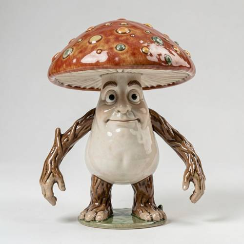
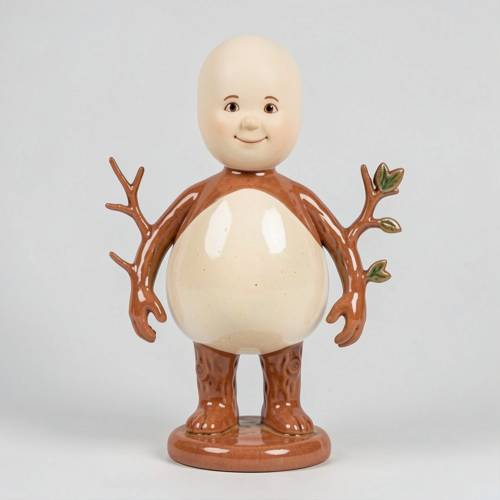
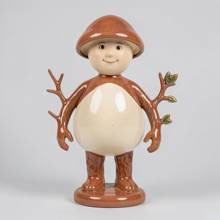
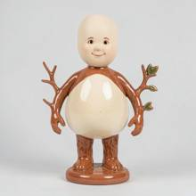

Grammar — Generated image: A ceramic mushroom man with arms like branches but no
Generated image: A ceramic mushroom man with arms like branches but no fungus cover on his head.

Direct — one call, no iteration

Continuum — Qwen3.8-27B + FLUX.2-klein-9B
Judge — Direct
FAILGrammar - Negation — The prompt specifies that the figure should have 'no fungus cover on his head'. However, the image clearly shows a figure with a large, reddish-brown mushroom cap on its head, which is a type of fungus cover. This contradicts the negative constraint in the prompt.
PASSCompound - Feature Matching — The image depicts a figurine that appears to be made of ceramic due to its glossy finish. This figurine is an anthropomorphic mushroom, thus a 'mushroom man'. The figure has two arms that are brown and textured to look like tree branches. Therefore, the image accurately portrays a ceramic mushroom man with arms like branches.
Judge — Continuum
PASSGrammar - Negation — The prompt includes the negative constraint 'no fungus cover on his head'. The figure in the image has a smooth, pale, bald head with painted facial features. There is no hat, hair, or any form of covering, including a fungus cover or mushroom cap. Therefore, this condition is met.
PASSCompound - Feature Matching — The image displays a figurine with a glossy finish, consistent with the material 'ceramic'. The figure is humanoid with a stout, rounded body, which fits the 'mushroom man' description. Its arms are brown and shaped like tree branches, with smaller twigs branching off. This fulfills all parts of the description 'A ceramic mushroom man with arms like branches'.
What the agent did
Thinking
The user wants to generate an image of a "ceramic mushroom-man (ceramic mushroom man)" with arm-shaped branches, but his head doesn't have a mushroom cap. Hmm, the wording is a bit strange: "no mushroom cover on his head" — so the body is mushroom-like (ceramic), the arms are like branches, but the head doesn't have a mushroom cap. In other words, it's a ceramic figure of a mushroom-man, whose arms resemble branches, and the head is bare (no mushroom cap). Let me generate with flux2-klein. I'll fill in visual details: a ceramic figurine, glazed pottery texture, a humanoid figure with a mushroom-shaped torso, arms that look like tree branches, a plain bare head (no mushroom cap). Prompt: "A ceramic figurine of a mushroom man, glazed pottery texture, humanoid body with a round mushroom-shaped torso, arms made of knotted tree branches with small twigs, smooth bare head with no mushroom cap, friendly face, standing on a small ceramic pedestal, soft studio lighting, neutral background." After that, I'll inspect and edit. Let's get started.
Step 1 — `generate_image`
{
"model": "flux2-klein",
"prompt": "A ceramic figurine of a mushroom man: glazed pottery texture in earthy terracotta and cream tones, humanoid body with a rounded mushroom-like torso, arms sculpted like knotty tree branches with small twigs and a few tiny leaves, smooth bare rounded head with NO mushroom cap or fungal cover, simple friendly painted face, standing on a small round ceramic base, soft studio lighting, clean light grey background"
}
Result img_0

Thinking
The image shows a ceramic mushroom man with branch-like arms, but the head is covered by a mushroom cap (brown cap with white spots). The user's request is "no mushroom cover on the head"—meaning the head must not be covered by a mushroom cap. Therefore, we need to remove the cap and reveal a bare head. Let's edit: remove the brown mushroom cap on top of the head and reveal a bare head. The cap looks like a hat. Use edit_image with a targeted instruction: "Remove the brown mushroom cap from the figure's head and reveal a smooth, bare ceramic head with a friendly face." However, the face is under the brim of the cap. Removing the cap may expose the top of the head. Let's try edit_image.
Model
The cap is on — that's the wrong part. Let me remove it so the head is bare.
Step 2 — `edit_image`
{
"image": "img_0",
"model": "flux2-klein",
"prompt": "Remove the brown mushroom cap covering the figure's head, leaving a smooth bare rounded ceramic head with the friendly face fully visible, no hat or cap of any kind"
}
Result img_1

Thinking
With this, the figure has become a ceramic mushroom man with branch-like arms (with small leaves and twigs), and his head is now smooth and bare — no mushroom cap. The body has a mushroom-like torso (brown with a cream-colored belly). The cap has been cleanly removed. This matches the prompt: "A ceramic mushroom man with branch-like arms but no mushroom cover on his head." The head is bare, the arms are branch-like, and the ceramic texture is preserved. I'll mark this as the best. Should I check the head in a bit more detail? The face looks fine, and the head is smooth and bare. Good enough. Mark img_1 as the best and stop.
Model
The cap is gone and the rest of the figure — ceramic glaze, branch-like arms with twigs and leaves, mushroom-shaped body, pedestal — is intact. This matches the description.
Step 3 — `mark_best`
{
"image": "img_1",
"reason": "Ceramic mushroom man with branch-like arms and a bare head (no fungus cover), exactly as requested."
}
Thinking
Complete. Marked the best. Will stop here and give the user a brief summary.
Model
Done. The final image shows a glazed ceramic mushroom man: rounded mushroom-like torso on a small pedestal, arms sculpted as knotty branches with little twigs and green leaves, and a smooth bare head — no mushroom cap — with a simple friendly painted face. It's marked as the best result.